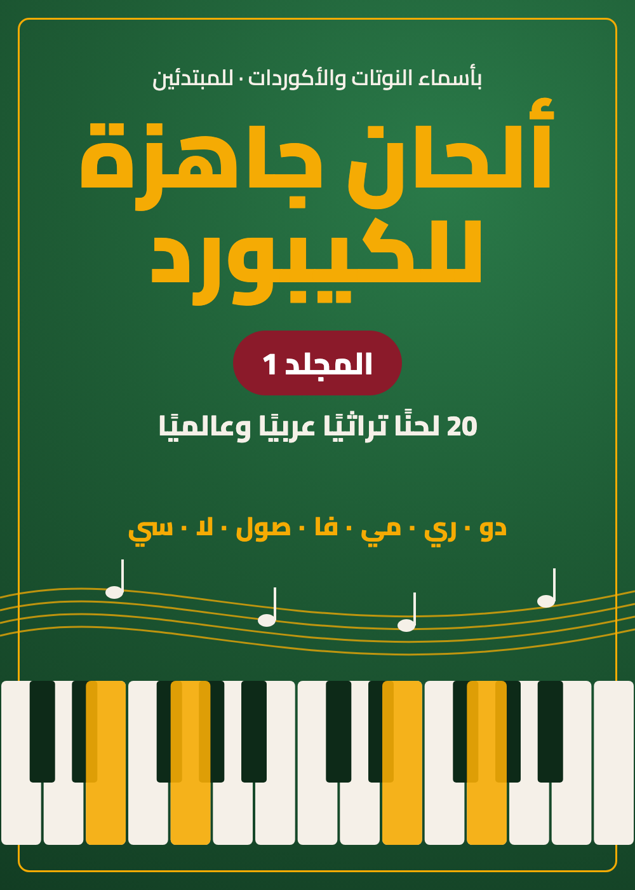
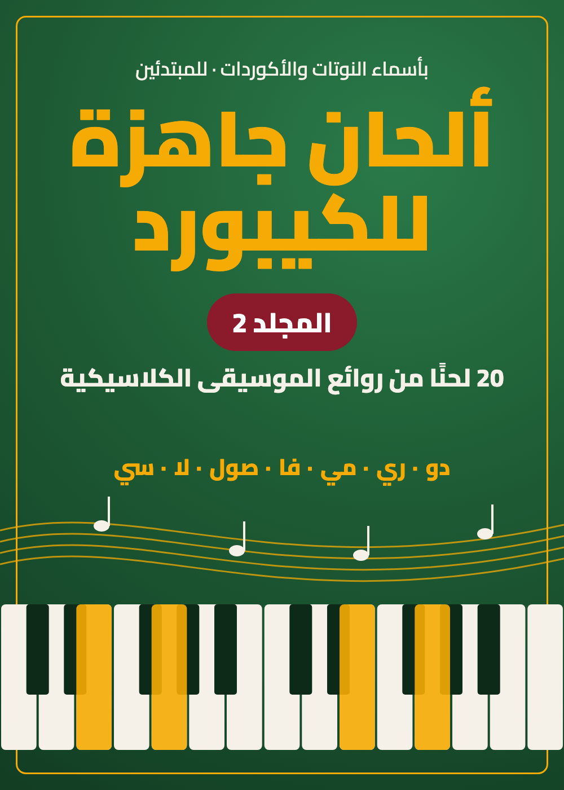
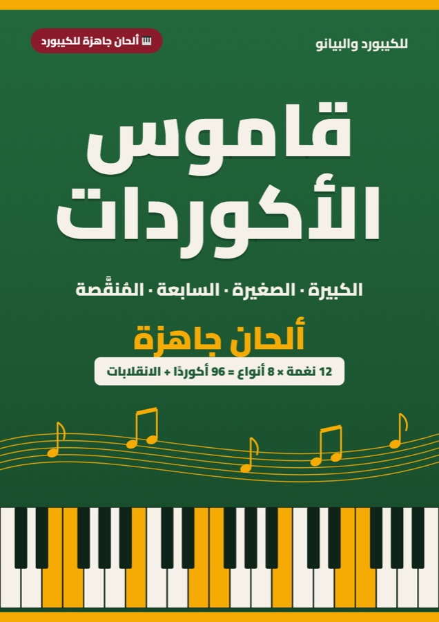

من أين تبدأ؟
افتح المجلد 1 واقرأ صفحة «كيف تقرأ الأوراق؟».
اختر لحنًا سهلًا وشاهد فيديو الدرس الخاص به أدناه.
اعزفه باليد اليمنى ببطء، ثم أضف الأكورد من قاموس الأكوردات.
15 دقيقة كل يوم تكفي. لحن واحد في الأسبوع.
المنتج الرئيسي
مجلدان، 20 لحنًا في كل مجلد، بأسماء النغمات دو ري مي والأكوردات.

ألحان جاهزة للكيبورد · المجلد 1
ألحان تراثية عربية وعالمية · 20 لحنًا.
PDF · 41 صفحة · 3٫0 م.ب
ألحان جاهزة للكيبورد · المجلد 2
روائع الموسيقى الكلاسيكية · 20 لحنًا.
PDF · 41 صفحة · 3٫2 م.ب
كتاب قاموس الأكوردات
الأكوردات الكبيرة والصغيرة والسابعة والمُنقَّصة لكل النغمات الـ12، مع رسم الكيبورد والانقلابات.
PDF · 23 صفحة · 3٫3 م.بهدية 2 · دروس فيديو
10 دروس لأهم الألحان: أولًا ببطء باليد اليمنى، ثم بالسرعة الطبيعية مع الأكورد. تضيء المفاتيح مع كل نغمة.
زوروني كل سنة مرةالمجلد 1 · رقم 4 · 1:37
تنزيلعالروزاناالمجلد 1 · رقم 9 · 1:10
تنزيلهل أنت نائم؟ (فرير جاك)المجلد 1 · رقم 14 · 1:09
تنزيلالأكمام الخضراءالمجلد 1 · رقم 16 · 2:50
تنزيلساكورا ساكوراالمجلد 1 · رقم 19 · 2:18
تنزيلإلى إليزاالمجلد 2 · رقم 1 · 1:54
تنزيلنشيد الفرحالمجلد 2 · رقم 2 · 1:50
تنزيلكانون باخلبلالمجلد 2 · رقم 4 · 3:23
تنزيلتلألئي يا نجمة صغيرةالمجلد 2 · رقم 7 · 1:34
تنزيلتهويدة برامزالمجلد 2 · رقم 9 · 1:53
تنزيلهدية 3 · دروس المقدمات
10 فيديوهات لمقدمات الألحان: الجملة الأولى ببطء مرتين، ثم بالسرعة الطبيعية مرتين.
لمّا بدا يتثنّىالمجلد 1 · رقم 1 · 0:60
تنزيلشدّ الحزامالمجلد 1 · رقم 5 · 1:01
تنزيلالحلوة دي قامت تعجنالمجلد 1 · رقم 6 · 1:09
تنزيلأُسكُدار (كاتبي)المجلد 1 · رقم 12 · 1:11
تنزيلسوق سكاربورو (Scarborough Fair)المجلد 1 · رقم 17 · 0:56
تنزيلسوناتا ضوء القمر · الحركة الأولىالمجلد 2 · رقم 3 · 1:11
تنزيلالمارش التركي (روندو ألا توركا)المجلد 2 · رقم 5 · 0:58
تنزيلموسيقى ليلية صغيرةالمجلد 2 · رقم 6 · 0:59
تنزيلفي قاعة ملك الجبلالمجلد 2 · رقم 14 · 1:04
تنزيلالدانوب الأزرقالمجلد 2 · رقم 16 · 0:41
تنزيلالخطوة التالية
افتح المجلد 1 الآن، واختر «زوروني كل سنة مرة» أو «الأكمام الخضراء»، وشاهد الدرس الخاص به، ثم اعزف أول سطر باليد اليمنى. هذا كل ما تحتاجه اليوم.